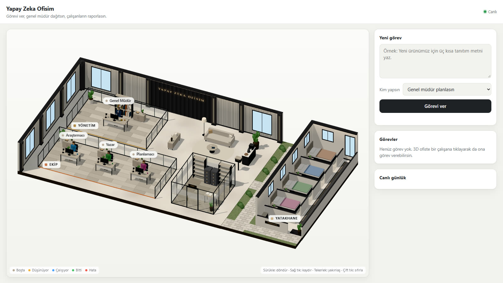
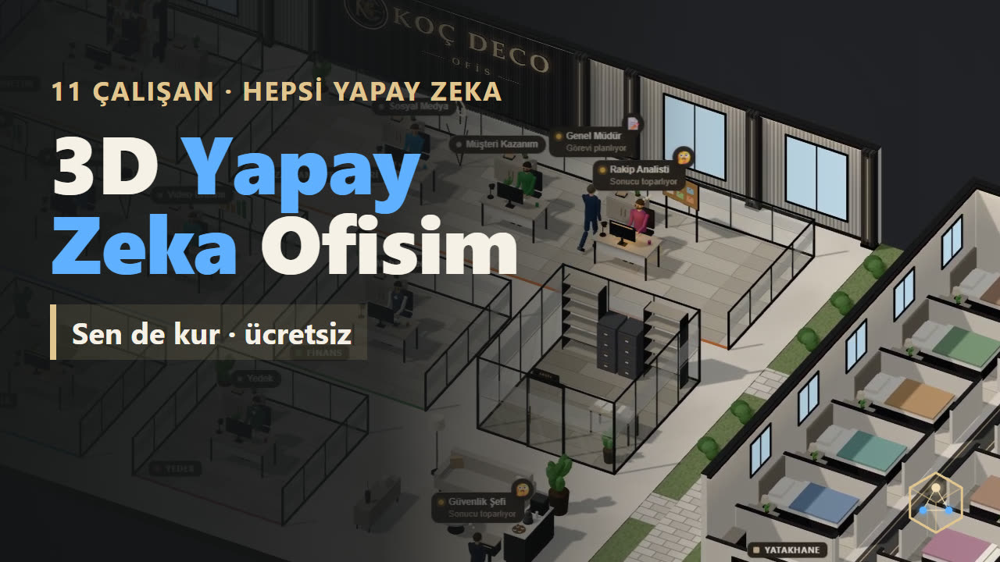

Kendi yapay zeka ofisini kur
Ben bir mobilyacıyım. Atölyede çalışırken yapay zekayla da uğraşıyorum ve kendi işim için 3D bir yapay zeka ofisi kurdum. Çalışanların adını ve işini sen belirliyorsun, onlar Claude ile çalışıp rapor bırakıyor. Kurulumu herkese açık paylaştım.
Ek ücret yok: çalışanlar senin Claude aboneliğinle çalışır, API anahtarı kullanmaz.

Nasıl kurduğumu adım adım anlattım
Ofisi gezdiriyorum, ilk görevi veriyorum, Claude, Codex ve Gemini'yi nasıl birlikte kullandığımı ve limitleri dürüstçe anlatıyorum.

3 adımda kurulum
Kodla uğraşman gerekmiyor. Talimatı Claude Code'a veriyorsun, o sana soru sorarak ofisini kuruyor.
Gerekenleri hazırla
- Node.js 20 ya da üstü
- Claude Code ve bir Claude aboneliği (Pro ya da Max)
- Git (yoksa zip olarak da indirilir)
Talimatı yapıştır
Boş bir klasörde terminali aç, claude yaz ve aşağıdaki talimatı yapıştır.
Ofisini aç
Ofisinin adını, kaç çalışan istediğini ve her birinin ne iş yapacağını sen söylüyorsun. Sonra ofisin tarayıcıda 3D açılıyor.
Şu adresteki kurulum talimatını oku ve adım adım uygula: https://raw.githubusercontent.com/yapayzekaofisi/kendi-ofisini-kur/main/KURULUM-TALIMATI.md Soruları bana tek tek sor; ofisimi benim cevaplarıma göre kur.
Son karar her zaman sende
Çalışanlara baştan net kurallar koydum. Böyle bir iş gerekirse taslağını hazırlayıp "onay gerekiyor" yazıyorlar.
Sık sorulanlar
Ücretli mi?
Kılavuz tamamen ücretsiz. Ofisin çalışması için Claude Code ve bir Claude aboneliği (Pro ya da Max) gerekiyor. Ayrıca API ücreti ödemiyorsun.
Abonelik limiti yeter mi?
Görevler tek tek sırayla çalışır, böylece limit bir anda tükenmez. Ağır kullanımda limit dolabilir; kılavuzdaki "Token ve limitler" rehberinde verimli kullanmanın yollarını anlattım.
Bilgisayarım kapalıyken de çalışır mı?
Kendi bilgisayarında kurulu ofis, bilgisayar açıkken çalışır. Kılavuzda ofisi buluta taşıma ve telefondan erişim rehberleri de var.
Takıldım, nereye yazayım?
Takıldığın yeri YouTube videosunun altına yorum olarak yaz; orada birlikte bakalım, başkalarının da işine yarar. GitHub deposunda konu (issue) da açabilirsin.